Toute une série d'appareils Game & Watch sont sortis tout au long des années 80. Et comme les consoles portables similaires de l'époque, elles sont devenues incroyablement populaires. La première a été produite par Gunpei Yokoi, un employé de Nintendo, qui a vu un homme d'affaires voyageant dans le Shinkansen jouer avec sa calculatrice et a pensé que l'entreprise pourrait fabriquer une machine de jeu portable pour aider à tuer le temps pendant les trajets.Chaque Game & Watch ne comportait qu'un seul jeu, et il y en avait une soixantaine au total. Certains étaient basés sur des machines d'arcade et étaient également responsables de l'introduction dans les foyers de grandes licences et de personnages de jeux, tels que Donkey Kong, The Legend of Zelda et Mario Bros.
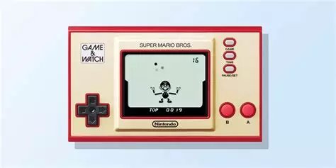La prochaine console de Nintendo n'a pas besoin d'être présentée. La NES jouait à des jeux 8 bits et était conçue pour la maison. Elle a été de loin la console la plus vendue de son époque, avec plus de 60 millions d'unités, et a aidé l'Amérique du Nord à se remettre du krach des jeux vidéo de 1983, qui a vu trop de consoles inonder le marché et les ordinateurs personnels devenir plus puissants. La NES était à l'origine commercialisée sous le nom de Family Computer, ou Famicom au Japon, mais a été commercialisée sous le nom de NES en Amérique du Nord lors du CES 1985. Les titres de lancement comprenaient Super Mario Bros, Ice Climber, Pinball et Duck Hunt. Vous pouviez vous procurer une console avec une copie de Super Mario Bros pour 99 $ ou un ensemble de luxe, qui comprenait deux jeux et plusieurs accessoires, pour 199,99 $.
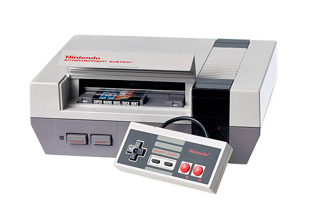La Nintendo Game Boy est une autre des plus grandes consoles de jeu de tous les temps. Pensé et conçu par l'équipe à l'origine de la Game & Watch, le Game Boy combine les caractéristiques de la première console portable avec les cartouches interchangeables de la NES pour créer l'une des consoles les plus vendues de tous les temps. Les ventes du Game Boy et du Game Boy Color (sorti en 1998) sont estimées à environ 120 millions d'unités.La console coûtait environ 90 dollars lors de son lancement aux États-Unis et était livrée avec un exemplaire de Tetris, considéré comme le jeu qui a contribué à ces ventes colossales. Nintendo a également fabriqué une gamme d'accessoires pour le Game Boy, notamment une imprimante et un écran grossissant avec lumière intégrée.
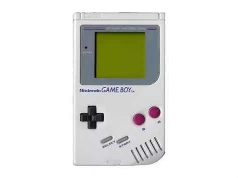La deuxième grande console de salon de Nintendo a connu un succès remarquable malgré la forte concurrence de la Sega Mega Drive. Bien que la machine de Sega soit sortie en premier, c'est la vaste bibliothèque de jeux de Nintendo qui a finalement propulsé sa console au rang de la plus vendue de l'ère des 16 bits, avec près de 50 millions d'unités écoulées dans le monde entier. Nintendo a adapté différentes versions de sa console pour différents marchés, la version japonaise étant connue sous le nom de Super Famicom ou SNES . De plus, Nintendo a implémenté un système de codage sur les cartouches, empêchant ainsi la lecture des jeux d'un pays sur une console d'un autre pays.
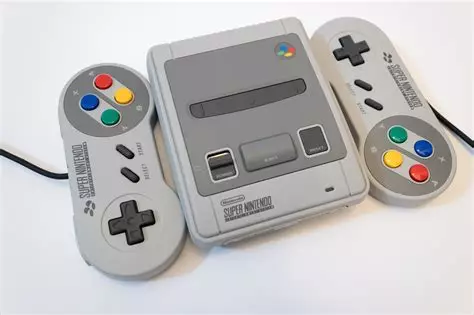Après la SNES, la console a connu une sortie étrange et finalement désastreuse, mais elle est considérée avec tendresse comme le précurseur de la réalité virtuelle à la maison. Le Virtual Boy se tenait sur une table ou un meuble et les joueurs devaient se pencher sur la visière pour jouer à des jeux en 3D. Malheureusement, au lieu d'offrir une expérience digne de l'ère spatiale, la plupart des joueurs en sont ressortis avec un sentiment de nausée et le concept a été mis de côté. Sa durée de vie se mesure en mois et non en années, et il n'est jamais sorti du Japon ou des États-Unis.
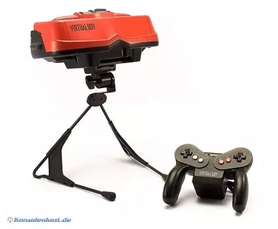La N64 tire son nom du processeur 64 bits qu'elle utilise et a été la dernière console de salon de Nintendo à utiliser des cartouches. Son lancement a été marqué par un grand succès, de nombreux clients se battant pour en acquérir une, et elle a été reconnue comme la console la plus puissante de sa génération. Cependant, elle a dû affronter la concurrence féroce de la PlayStation de Sony et de la Saturn de Sega, ce qui l'a empêchée de répliquer le succès de ses prédécesseurs, se vendant à seulement un peu moins de 33 millions d'unités. Malgré cela, la N64 est demeurée dans les annales comme une console de jeux Nintendo exceptionnelle, surtout pour les passionnés. Une grande partie de son attrait réside dans sa gamme de jeux : des titres légendaires tels que Super Mario 64, The Legend of Zelda: Ocarina of Time et GoldenEye 007 sont toujours salués comme parmi les meilleurs de tous les temps.
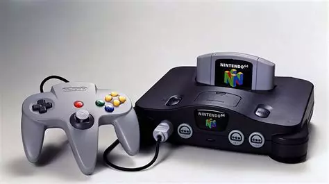Nintendo a opté pour le format de disque optique avec la GameCube, mais s'est retrouvé en compétition féroce avec la PlayStation 2 de Sony, la Xbox de Microsoft et la Dreamcast de Sega. Les joueurs pouvaient sauvegarder leur progression sur des cartes mémoire d'une capacité allant de 4 à 64 Mo, tandis que la manette était repensée, passant du modèle à trois poignées de la N64 à un modèle à deux poignées pour la GameCube. Malgré cela, la console a été un échec retentissant. Bien que des titres emblématiques comme Mario et Zelda aient été présents sur la GameCube, contribuant en partie à son succès initial, seules 22 millions d'unités ont été vendues au total. Comparé aux 153 millions de PlayStation concurrentes écoulées, il s'agit d'un revers majeur. Malgré cet échec commercial, la GameCube demeure une console emblématique de l'histoire du jeu vidéo.
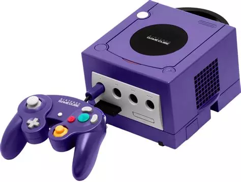La Nintendo DS, abréviation de "Dual Screen", est une console portable révolutionnaire sortie en 2004. Elle a introduit un concept novateur avec son écran tactile intégré, offrant de nouvelles possibilités de gameplay. La DS a connu un succès phénoménal grâce à sa bibliothèque de jeux diversifiée, allant des classiques de Nintendo aux titres innovants exploitant pleinement les fonctionnalités uniques de l'appareil. Elle a été suivie par plusieurs itérations telles que la DS Lite, la DSi et la DSi XL, élargissant encore son public et son attrait. Au total, la Nintendo DS s'est vendue à plus de 150 millions d'unités dans le monde, ce qui en fait l'une des consoles portables les plus populaires de tous les temps.
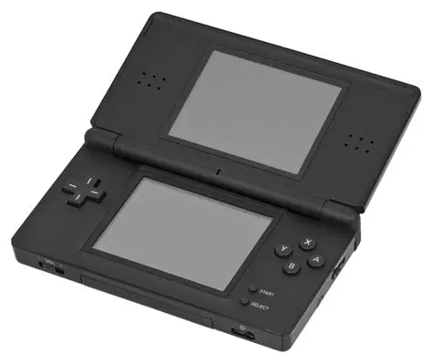La Wii a marqué l'entrée de Nintendo dans la septième génération de consoles de salon, où elle a affronté une concurrence féroce incarnée par la PlayStation 3 de Sony et la Xbox 360 de Microsoft. Malgré cette compétition intense, la Wii a réussi à surpasser ses concurrentes en termes de ventes pendant un certain temps. Ce succès est largement attribuable à son innovation majeure : la télécommande Wii, qui a introduit une toute nouvelle façon de jouer en permettant à la console de suivre les mouvements dans l'espace tridimensionnel. De plus, l'introduction de la Wii Balance Board, conçue pour les jeux de fitness, a élargi les possibilités interactives de la console. Son orientation vers un public familial ainsi que sa bibliothèque de jeux variée ont contribué à faire de la Wii la console de salon la plus populaire pendant un certain temps.
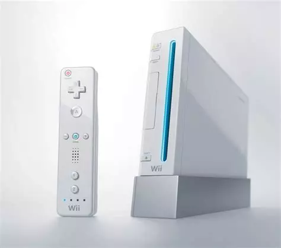Nintendo a poursuivi sa stratégie axée sur l'innovation avec la Nintendo 3DS, une évolution de son concept de console portable DS, en capitalisant sur la technologie 3D qui était alors en vogue. L'écran supérieur de la 3DS est passé à la 3D, mais sans nécessiter le port de lunettes, contrairement aux dispositifs traditionnels. Malgré des attentes mitigées et des performances parfois décevantes de cet écran 3D, la 3DS a néanmoins connu un succès commercial massif. Depuis son lancement, elle a bénéficié de mises à jour mineures, notamment avec le modèle XL offrant un écran plus grand, ainsi que des versions améliorées. Pour répondre aux besoins des jeunes enfants ou des personnes préférant une expérience 2D, une version exclusivement en 2D est également disponible.
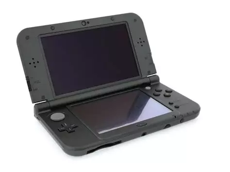La Wii U représente la transition de Nintendo vers la génération suivante de consoles de salon, en réponse à la PlayStation 4 et à la Xbox One. Elle marque également le passage de Nintendo à la haute définition, étant la première console de la marque à proposer des graphismes HD. Son principal dispositif de contrôle est le Wii U GamePad, équipé d'un écran tactile. Malgré un accueil initial favorable, la Wii U a ultérieurement été considérée comme un échec commercial dans l'industrie du jeu, avec des ventes dépassant à peine les 13 millions d'unités depuis son lancement.
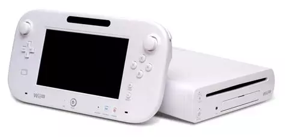Avant le lancement de la Nintendo Switch en début d'année 2017, le phénomène du rétro gaming avait pris une ampleur considérable. Nintendo, le géant japonais du jeu, a contribué à cette tendance en permettant aux joueurs de tous âges de redécouvrir certains de ses classiques grâce à une version miniaturisée de sa console NES d'origine. Cette console proposait 30 jeux emblématiques de la Nintendo Entertainment System, accompagnés d'une manette au design authentique mais équipée d'un connecteur HDMI moderne. Le succès de cette initiative a été phénoménal, avec environ 2,3 millions d'exemplaires vendus avant l'arrêt de sa production en 2017. Face à une demande persistante, Nintendo a réédité une série limitée en 2018 pour satisfaire les fans.
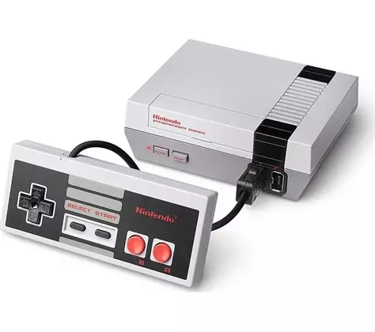Après le triomphe de la NES Classic Mini précédemment mentionnée, la Super NES Classic Edition a été lancée en 2017 et, tout comme son prédécesseur, a rencontré un succès retentissant. Avec plus de 5 millions d'unités vendues, elle a été retirée du marché à la fin de l'année 2018. La Super NES Classic Edition était proposée en trois versions différentes, reflétant les variantes de la console d'origine disponibles au Japon, en Amérique du Nord et en Europe. Elle comprenait 21 titres Super NES préinstallés, incluant la première version de Star Fox 2, qui avait été annulée en 1995 (ce titre est également disponible sur Switch).
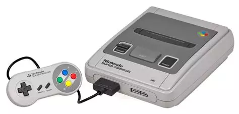Nous en arrivons donc à la Switch, qui a été commercialisée pour la première fois en mars 2017. Elle comprend un appareil semblable à une tablette avec un écran tactile, plus une station d'accueil pour y jouer à la maison sur un téléviseur. Elle est donc à la fois portable pour jouer en déplacement, mais peut aussi fonctionner à la maison. Les manettes Joy-Con sont de petits coussins qui se glissent de chaque côté de l'écran. Ils peuvent également être insérés dans une unité centrale de contrôle de la maison afin de donner une impression de joypad à l'ensemble du jeu. Les titres de la première partie de Nintendo ont connu un énorme succès sur la console. The Legend of Zelda : Breath of the Wild, Mario Kart 8 Deluxe, Super Mario Odyssey, Super Smash Bros. Ultimate, Pokémon Sword and Shield et Animal Crossing : New Horizons se sont vendus à plus de vingt millions d'unités chacun. Contrairement à la Wii U, la Switch a connu un succès remarquable, avec 79 millions d'unités vendues jusqu'à la fin de l'année 2020. Elle a également fait l'objet de plusieurs éditions spéciales, comme l'édition Mario Red and Blue de 2021.
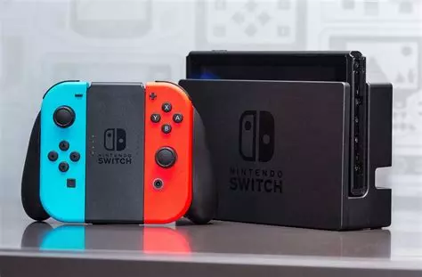La Switch Lite est une version modifiée de la Switch, dépourvue des Joy-Cons détachables et du dock permettant la connexion à un téléviseur. Au lieu de cela, elle est conçue pour une portabilité maximale, avec des commandes intégrées et est proposée en quatre couleurs standard ainsi que des éditions spéciales, notamment pour Animal Crossing. La Switch Lite a remporté un franc succès, avec 13,5 millions d'unités vendues d'ici la fin de l'année 2020.
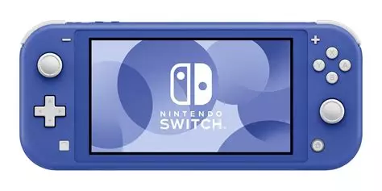Bien que Nintendo n'ait pas encore lancé de Switch Pro malgré plusieurs années de rumeurs, en 2021, elle a introduit une version améliorée de la Switch. Le modèle OLED offre un écran nettement amélioré, avec des noirs plus profonds et des couleurs plus éclatantes. De plus, la console semble plus solide et bénéficie d'une béquille bien améliorée pour une expérience de jeu en déplacement plus agréable.
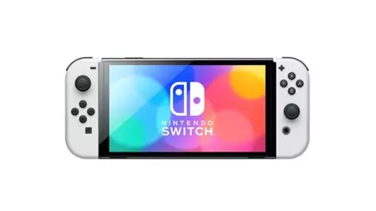